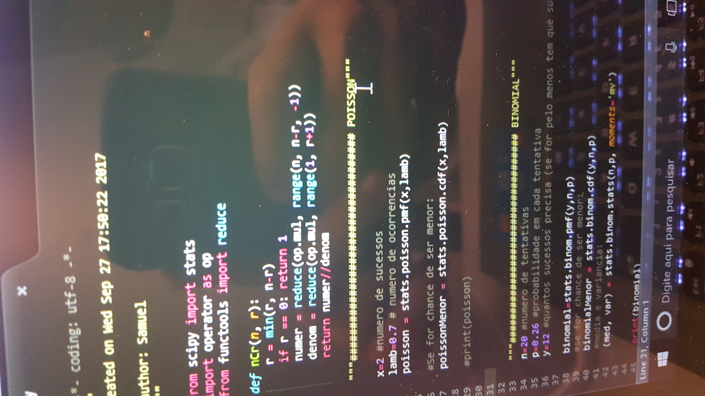

- 

O processo desse projeto
Após alguns meses de aprendizagem de Python, chegou a hora de botar os conhecimentos a prova. Para o projeto 2 da matéria Design de Software tivemos que fazer um jogo baseado na famosa franquia “Pokemon” onde os alunos deveriam fazer diversas funções para aprofundar os seus jogos cada vez mais. Apesar da grande quantidade de funções o jogo, ele funcionava a base de textos. Qualquer funcionalidade gráfica seria reservada para o projeto final.